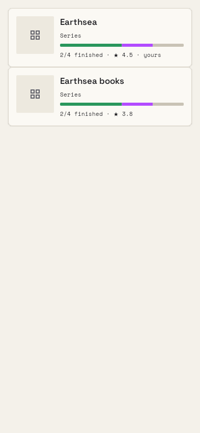
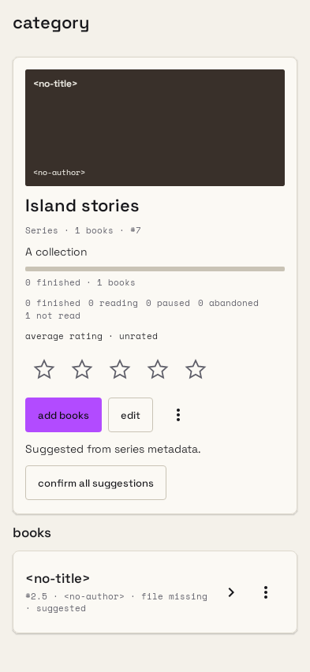
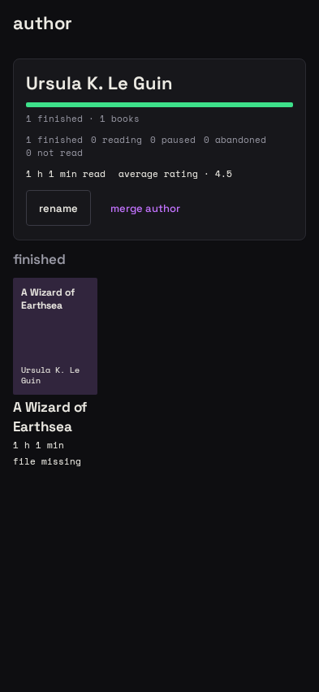
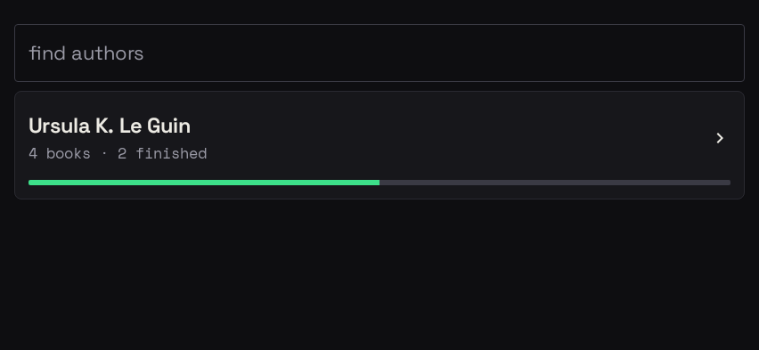

Categories, series and authors
M4 reference captures from Compose/Robolectric. These document the implemented layout and theme colors; physical-device motion, touch behavior and visual acceptance belong to the M4 test checklist.

Category identity, progress and review state.

Series details, rating and suggestion controls; explicit missing metadata.

Author progress, time, rating and books grouped by state.

Ink theme, landscape and 150% text.
Device checklist · Validation record